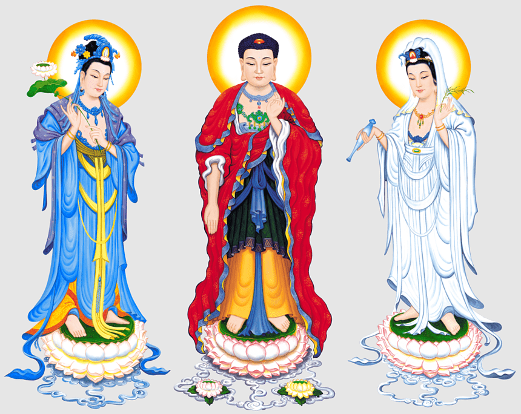
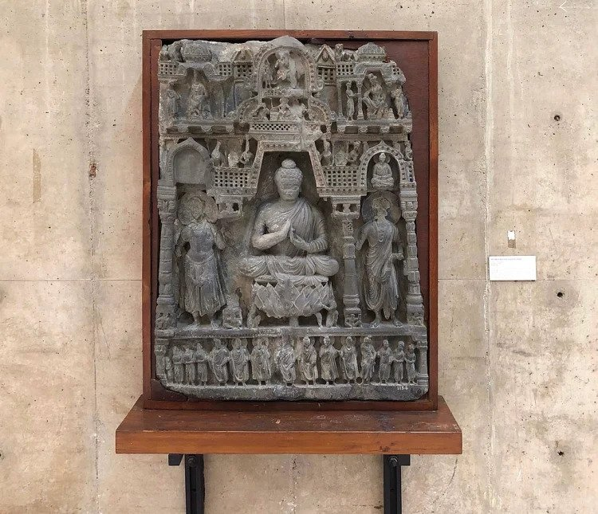
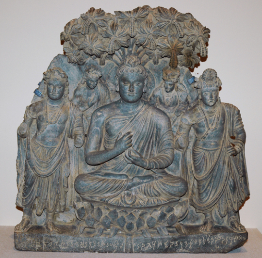
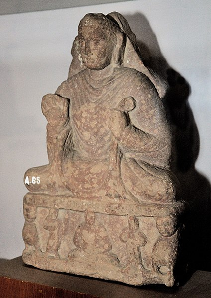

Содержание:

Буддийская триада развилась из ранних теорий шилы (добродетельного поведения), самадхи (концентрации) и праджни (мудрости), в которых эти составляющие вместе стали отождествляться с тремя скандхами (группами, составляющими показатели духовного прогресса) и тремя чикшас (ветви обучения, тройное обучение и дисциплина). (источник)

Идея этой троицы заимствована из Сутры Longer/Larger Sukhavati-vyuha, в которой кратко упоминаются два вышеупомянутых бодхисаттвы как главные спутники Амитабхи. Эта пара помощников встречается также в Сутре Amitayur-dhyana, где первый представляет сострадание, а второй считается олицетворением мудрости. (источник, копия)
В Японии сохранилось много старых изображений Триады Амиты или Троицы: Будды Амиты в окружении двух бодхисаттв Авалокитешвары и Махастхамапрапты. Функция Авалокитешвары — сострадание, а функция Махастхамапрапты — мудрость. Обе они помогают Амите Будде спасать жизни живых существ. ... Т.о., Будда Амита и две постоянных сопровождающих его бодхисаттвы стали весьма популярны среди японских буддистов и среди художников. Во всяком случае не может быть сомнения, что Амита Триада была создана в Гандхаре в кушанский период, т. е. со 2 по 3 век нашей эры, и Гандхарская Амита Триада, скорее всего, создавалась с культовой целью или как культовое изображение. В конце концов, буддийское искусство Чистой Земли уже возникло в Гандхаре до пятого века нашей эры, в кушанский период, самое позднее в начале третьего века нашей эры.
Источник информации здесь. (копия)

Брюссельский Будда — знаменитая статуя Будды греко-буддийского искусства Гандхары. Брюссельский Будда принадлежит к категории «триад Сидящего Будды», которые можно увидеть одновременно в греко-буддийском искусстве Гандхары и в искусстве Матхуры раннего кушанского периода. (источник)
Справа от Будды, скорее всего, находится бодхисаттва Майтрейя. Бодхисаттву слева обычно называют Авалокитешварой. Над плечами Будды парят индийские боги Брахма и Индра, держащие его скипетр-молнию. Транскрипция и перевод однострочной надписи относительно ясны. Спорная часть текста — это дата, пятый год. Большинство ученых сходятся во мнении, что этот год приходится на эпоху Канишки, которая началась в 127 году нашей эры. Это означает, что пятый год может приходиться либо на 132 год нашей эры, либо на 232 год нашей эры. (источник, копия)

Интересно, что тема триады также встречается на постаменте изображения Будды из Аньор, датированного 51 годом (129 г. н.э.), которое в настоящее время находится в Музее Матхуры. (источник, копия)
Доктрина Трикая (санскрит: त्रिकाय, букв. «три тела») - фундаментальная доктрина буддизма Махаяны и Ваджраяны, которая описывает многомерную природу существования Будды. Эта концепция утверждает, что Будда имеет три различных тела или аспекта, каждый из которых представляет собой отдельный аспект просветления. Первое тело — это Дхармакайя, часто называемое «телом Дхармы» или высшей реальностью. Это воплощает суть самого просветления, охватывая такие концепции, как пустота, природа Будды и чистое существование за пределами материальных и духовных форм. Второе тело, известное как Самбхогакая, — это «Тело наслаждения». Это считается проявлением, возникающим в результате выполнения обетов и обязательств на духовном пути. Третье тело, Нирманакая, называется «Тело Трансформации». Это представляет физическое появление Будды в мире. Исторические Будды, такие как Гаутама Будда, являются проявлениями Нирманакаи, что позволяет им взаимодействовать и направлять разумные существа на их пути к просветлению. Это земное воплощение служит мостом между божественным и человеческим, делая учение и сострадание Будды доступными для тех, кто ищет руководства и мудрости.
Доктрина Дхармакаи, возможно, была впервые изложена в «Аштасахасрика Праджняпарамита» «Совершенство мудрости в восьми тысячах стихов», составленном в I веке до нашей эры. Около 300 г. н.э. школа Йогачара систематизировала распространенные идеи о природе Будды в Трикае или доктрине трех тел. (источник, копия)
Триратна - три драгоценности буддийской доктрины: Будда, Дхарма (закон, учение), Сангха (монашеская община). Триратна является своеобразным «символом веры» буддиста. (источник, копия)
Тришула - традиционный индийский трезубец. Является религиозным символом в буддизме и индуизме. Тришула является одним из основных атрибутов Шивы, означая его тройственную природу: творца, хранителя и разрушителя Вселенной. (источник, копия)